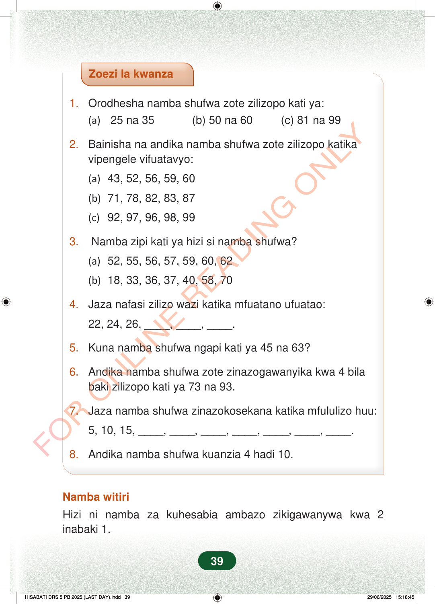

Zoezi la kwanza1.Orodhesha namba shufwa zote zilizopo kati ya:(a)25 na 35 (b) 50 na 60 (c) 81 na 992.Bainisha na andika namba shufwa zote zilizopo katikavipengele vifuatavyo:(a)43, 52, 56, 59, 60(b)71, 78, 82, 83, 87(c)92, 97, 96, 98, 993.Namba zipi kati ya hizi si namba shufwa?(a)52, 55, 56, 57, 59, 60, 62(b)18, 33, 36, 37, 40, 58, 704.Jaza nafasi zilizo wazi katika mfuatano ufuatao:22, 24, 26, ____, ____, ____.5.Kuna namba shufwa ngapi kati ya 45 na 63?6.Andika namba shufwa zote zinazogawanyika kwa 4 bilabaki zilizopo kati ya 73 na 93.7.Jaza namba shufwa zinazokosekana katika mfululizo huu:5, 10, 15, ____, ____, ____, ____, ____, ____, ____.8.Andika namba shufwa kuanzia 4 hadi 10.Namba witiriHizi ni namba za kuhesabia ambazo zikigawanywa kwa 2inabaki 1.39
Zoezi la kwanza
1. Orodhesha namba shufwa zote zilizopo kati ya:
(a) 25 na 35 (b) 50 na 60 (c) 81 na 99
2. Bainisha na andika namba shufwa zote zilizopo katika vipengele vifuatavyo:
(a) 43, 52, 56, 59, 60
(b) 71, 78, 82, 83, 87
(c) 92, 97, 96, 98, 99
3. Namba zipi kati ya hizi si namba shufwa?
(a) 52, 55, 56, 57, 59, 60, 62
(b) 18, 33, 36, 37, 40, 58, 70
4. Jaza nafasi zilizo wazi katika mfuatano ufuatao:
22, 24, 26, ____, ____, ____.
5. Kuna namba shufwa ngapi kati ya 45 na 63?
6. Andika namba shufwa zote zinazogawanyika kwa 4 bila baki zilizopo kati ya 73 na 93.
7. Jaza namba shufwa zinazokosekana katika mfululizo huu:
5, 10, 15, ____, ____, ____, ____, ____, ____, ____.
8. Andika namba shufwa kuanzia 4 hadi 10.
Namba witiri
Hizi ni namba za kuhesabia ambazo zikigawanywa kwa 2 inabaki 1.
39
Zoezi la kwanza1.Orodhesha namba shufwa zote zilizopo kati ya:(a) 25 na 35(b) 50 na 60(c) 81 na 992.Bainisha na andika namba shufwa zote zilizopo katika vipengele vifuatavyo:(a) 43, 52, 56, 59, 60(b) 71, 78, 82, 83, 87(c) 92, 97, 96, 98, 993.Namba zipi kati ya hizi si namba shufwa?(a) 52, 55, 56, 57, 59, 60, 62(b) 18, 33, 36, 37, 40, 58, 704.Jaza nafasi zilizo wazi katika mfuatano ufuatao:22, 24, 26, [[blank:item-9]], [[blank:item-10]], [[blank:item-11]].5.Kuna namba shufwa ngapi kati ya 45 na 63?6.Andika namba shufwa zote zinazogawanyika kwa 4 bila baki zilizopo kati ya 73 na 93.7.Jaza namba shufwa zinazokosekana katika mfululizo huu:5, 10, 15, [[blank:item-14]], [[blank:item-15]], [[blank:item-16]], [[blank:item-17]], [[blank:item-18]], [[blank:item-19]], [[blank:item-20]].8.Andika namba shufwa kuanzia 4 hadi 10.Namba witiriHizi ni namba za kuhesabia ambazo zikigawanywa kwa 2 inabaki 1.